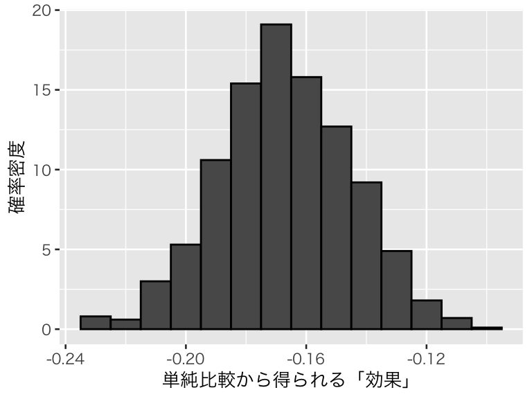

Topic 2 セレクションバイアス
- トピック2の講義スライド (PDF, 2.6MB)
2.1 準備
2.1.1 予習、講義動画、実習課題
このトピックでやるべきことは、以下のとおりである。
- シラバス(PDFファイル) に記載されているトピック2の予習課題を読む。
- KUTLMS (Moodle) にあるトピック2の講義動画を視聴する。
- この資料の続きを読み、Rを使った実習を行うことでセレクションバイアスの理解を深める。
- まず、書いてあるコードをそのまま実行する。
- 自分で数字（シミュレーションの条件）を変えて、結果がどう変わるか研究する（これが課題）。
- （おまけ：希望者のみ）Josh Angrist による以下の解説動画（英語）を視聴する。
- Ceteris Paribus （他の条件が等しければ）
- Selection Bias（セレクションバイアス）
2.1.2 Rパッケージの読み込み
必要なパッケージを読み込み、作図用の日本語フォントを設定する。
pacman::p_load(tidyverse)
theme_set(theme_gray(base_size = 10, base_family = "HiraginoSans-W3")) # macOS用
#theme_set(theme_gray(base_size = 10, base_family = "Meiryo")) # Windows用
#theme_set(theme_gray(base_size = 10, base_family = "ipaex")) # Ubuntu用
#showtext::showtext_auto() # Cloud用
#theme_set(theme_gray(base_size = 10, base_family = "noto")) # Cloud用2.1.3 このトピックで使うRコードの説明
このトピックで新たに使うRの関数について説明する。
2.1.3.1 dplyr::case_when()
dplyr::case_when() は、複数の条件によって変数の値を変えるときに使う。
例えば、gender という変数があり、値が「女」と「男」の二値だけであるとしよう。
## gender
## 女 男
## 60 40この変数の値が「女」のときは1、「男」のときは0になる female というダミー変数は、ifelse() で作れる。
## female
## 0 1
## 40 60同様に、male ダミーは、
## male
## 0 1
## 60 40で作れる。
このように、ifelse() は、条件が1つしかない場合分け（つまり、2つの場合に分けるとき）には便利である。
次に、gender2 という変数があり、取り得る値が「女」「男」「その他」の3種類であるとする。
gender2 <- sample(c("女", "男", "その他"), size = 100,
replace = TRUE, prob = c(0.45, 0.45, 0.1))
table(gender2)## gender2
## その他 女 男
## 9 41 50この変数の値を英語に変換したいとする。これも、ifelse()でできる。
gender_eng1 <- ifelse(gender2 == "女", "female",
ifelse(gender2 == "男", "male", "other"))
table(gender_eng1)## gender_eng1
## female male other
## 41 50 9このように、ifelse() を入れ子にして使えば、変数を3つ以上の場合に分けることもできる。
しかし、ifelse() を入れ子にするとコードが読みにくい。3つの場合分けならまだマシだが、場合分けの数が増えると厄介だ。そこで、dplyr::case_when() を使う。
次のようにする。
gender_eng2 <- case_when(
gender2 == "女" ~ "female",
gender2 == "男" ~ "male",
TRUE ~ "other"
)
table(gender_eng2)## gender_eng2
## female male other
## 41 50 9このように、case_when() では、条件 ~ 条件がTRUE のときの値 という書き方をする。条件の評価は、上から順番に行われる。したがって、上の例では gender2 == "男" の評価が終わった時点で残りは 「その他」だけなので、残り全てを “ohter” にするために、最後の条件を TRUE にしている。
条件が順番に評価されることを理解するために、もう1つ例をあげる。 まず、アルファベットをランダムに生成する。
## rchs
## a b c d e f g h i j k l m n o p q r s t u v w x y z
## 19 15 19 14 21 21 23 17 19 15 21 13 28 16 16 20 21 24 24 11 16 28 19 23 19 18これをアルファベット順に基づいて適当なグループに分ける。
group_chs <- case_when(
rchs < "e" ~ "a2d",
rchs < "i" ~ "e2h",
rchs < "o" ~ "i2n",
rchs < "t" ~ "o2s",
rchs < "y" ~ "t2x",
TRUE ~ "y2z"
)
table(group_chs)## group_chs
## a2d e2h i2n o2s t2x y2z
## 67 82 112 105 97 372.2 セレクションバイアスのシミュレーション
2.2.1 メールによる販促の効果
教科書 (安井 2020) の第1章（pp.4-6）にある、メールによる販売促進施策のセレクションバイアスを、シミュレーションによって確かめてみよう。
まず、対象全体の人数を決める。
次に、N人をメールがないときに商品を買いやすいグループAと、商品をあまり買わないグループBに分けよう。ここでは、同じ人数に分けることにする。
グループAとBが、メールを受け取らなかったときに商品を買う確率 pA と pB を決める。ただし、pA \(>\) pB である。
次に、誰にメールを送るかを決めよう。教科書 (安井 2020) に書かれているとおり、元々商品を買いそうな人にメールを送りやすいと考えて、各グループのメンバがメールを受け取る確率をそれぞれ pA / (pA + pB)、pB / (pA + pB ) としよう。また、メールは全部で N/2 人に送ることにする。メールを受け取れば1、受けとらなければ0をとる mail という変数を作る。
n_mail <- N / 2
n_receive <- round(n_mail * c(pA, pB) / sum(pA, pB))
d1$mail <- rep(c(1, 0, 1, 0),
times = c(n_receive[1], N / 2 - n_receive[1],
n_receive[2], N / 2 - n_receive[2]))メールを送ることによって商品を購入する確率がどれくらい上がるか、つまり、メールの効果である tau (\(\tau\)) の値を決める。ここでは、0.05ポイント上昇することにしよう。ここで設定する値が本当の因果効果である。
メールの送信が終わった後の購買行動を決める。まず、メール送信後の各人の購買確率を計算する。 Aの購買確率はメールを受け取らなければ pA、受け取れば pA + tau である。同様に、Bの購買確率はメールを受け取らなければ pB、受け取れば pB + tau である。
確率によって、商品を買うかどうかをベルヌーイ 試行 (Bernoulli) で決める。つまり、確率 \(p\) で表が出るコインを投げて、表が出たら購入し、裏が出たら購入しないと考える。
\(\mbox{Bernoulli}(p) = \mbox{Binomial}(1, p)\) なので、Rでベルヌーイ試行を実行するには、二項分布 (binomial distribution) から乱数を生成する rbinom()をsize = 1 にして使えば良い。
メール受信状況別の購入割合は
d1_gr <- d1 %>%
mutate(mail = factor(mail, labels = c("メールなし", "メールあり"))) %>%
group_by(mail) %>%
summarize(purchase_rate = mean(purchase)) %>%
print()## # A tibble: 2 x 2
## mail purchase_rate
## <fct> <dbl>
## 1 メールなし 0.366
## 2 メールあり 0.574である。図にすると、
p1 <- ggplot(d1_gr, aes(x = mail, weight = purchase_rate)) +
geom_bar(width= 0.5) +
labs(x = "", y = "購買率")
plot(p1)となる。単純に比較すると、
## [1] 0.208がメールの効果のように見えてしまう。しかし、実際のメールの効果は、先ほど設定したとおり0.05 である。
ちなみに、この「バイアスを含む効果」は単回帰によっても得られる。
##
## Call:
## lm(formula = purchase ~ mail, data = d1)
##
## Residuals:
## Min 1Q Median 3Q Max
## -0.574 -0.366 -0.366 0.426 0.634
##
## Coefficients:
## Estimate Std. Error t value Pr(>|t|)
## (Intercept) 0.36600 0.02185 16.749 < 2e-16
## mail 0.20800 0.03090 6.731 2.85e-11
##
## Residual standard error: 0.4886 on 998 degrees of freedom
## Multiple R-squared: 0.04342, Adjusted R-squared: 0.04246
## F-statistic: 45.3 on 1 and 998 DF, p-value: 2.846e-11mail の効果の推定値は、0.21 である。また、その \(p\)値が\(2.85 \times 10^{-11} < 0.001\) なので、この効果は有意水準0.001（0.1%）で統計的に有意である。単に「統計的に有意かどうか」を調べることには意味がないことがよくわかるだろう。
このように、処置（介入）の値が結果（購入確率）に依存していると、バイアスが生じる。この場合は、効果が過大評価されてしまう。
1回のシミュレーションでは、偶然そうなっただけかもしれないので、これを複数回（できるだけ多く）繰り返そう。 そのために、関数を用意する。返り値（戻り値）は、単純比較から得られる効果の大きさとする。
sim_mail <- function(tau = 0.05, N = 1000, n_mail = N / 2, pA = 0.6, pB = 0.3) {
# 引数の条件を設定する：条件を満たさない場合はエラー
if (pA <= pB) stop("pA must be larger than pB.")
if (N < n_mail) stop("N must be larger than n_mail.")
if (pA > 1 | pB < 0) stop("pA and pB must be in the range [0, 1].")
if (tau + pA > 1) stop("beta + pA must be equal to or smaller than 1.")
if (tau + pB < 0) stop("beta + pB must be equal to or greater than 0.")
group <- rep(c("A", "B"), each = N /2)
n_receive <- round(n_mail * c(pA, pB) / sum(pA, pB))
mail <- rep(c(1, 0, 1, 0),
times = c(n_receive[1], N / 2 - n_receive[1],
n_receive[2], N / 2 - n_receive[2]))
p_after <- ifelse(group == "A", pA + tau * mail, pB + tau * mail)
purchase <- rbinom(N, size = 1, prob = p_after)
fit <- lm(purchase ~ mail)
return(coef(fit)[2])
}試しに、tau = 0.05 で1回シミュレーションしてみる。
## mail
## 0.142tau、pA、pB の値を変えてみる。
## mail
## 0.154最初と同じ条件で、シミュレーションを1000回繰り繰り返してみる。
この結果を可視化する。本当の因果効果である 0.05 の位置を赤い縦線で示す。
p_s1 <- tibble(tau = s1_1000) %>%
ggplot(aes(x = tau, y = after_stat(density))) +
geom_histogram(color = "black", binwidth = 0.02) +
geom_vline(xintercept = 0.05, color = "tomato") +
labs(x = "単純比較から得られる「効果」", y = "確率密度")
plot(p_s1)本当の効果は0.05なのに、推定された効果の平均値は0.15 、中央値は 0.15 である。
このように、サンプルセレクションのせいでセクションバイアスが生じ、効果が過大推定されることがわかる。 サンプルセレクションの内容によっては、効果が過小評価される場合もある。
2.2.1.1 購買行動のモデリング：発展的内容*
この内容はセレクションバイアスとはあまり関係ないので、興味と余力がある人のみ読めば良い。
上の説明では、メールによる販促効果が一定であると考えたが、実際には
- まったく買う気がない人にはあまり効果がない。
- 元々買う予定の人にはあまり効果がない。
- 買うか買わないか迷っている人には効果が大きい。
ということが予想される。そのような効果をモデル化してみよう。
個人 \(i\) が商品を買うかどうかを表す変数を \(Y_i\) とする。\(Y_i = 1\) ならば購入、\(Y_i = 0\) ならば非購入とする。\(Y_i\) は二値変数なので、個人\(i\)が商品を買う確率を \(\theta_i\) として、ベルヌーイ分布で購買モデルを考えることができる。すなわち、 \[ Y_i \sim \mbox{Bernoulli}(\theta_i) \] と考える。ここで、購買確率 \(\theta_i\) は、メールがない場合に商品を買おうと思っていた度合い \(\alpha\) と、メールの効果 \(\tau\) によって決まると考える。 \(\alpha\) が0に近ければ買うかどうか迷っている状態、絶対値が大きい負の値ならほとんど買う気がない状態、大きい正の値ならば買うつもりの状態を表す。商品を買いやすい集団Aと買いにくい集団Bがいるとすると、\(\alpha\) も集団ごとに異なると考えられる。そこで、個人 \(i\) が属するグループを \(G_i \in \{A, B\}\) とすると、この度合いは、\(\alpha_{G_i}\) と表すことができる。
\(M_i\) をメールを受け取ったことを表すダミー変数、つまり、メールを受け取れば \(M_i = 1\)、受け取らなければ \(M_i = 0\) になる変数だとすると、個人 \(i\) が商品を買おうと思う「度合い（確率ではない）」は、\(\alpha_{G_i} + \tau M_i\) と表せる。
この「度合い」は確率ではなく、\((-\infty, \infty)\) の値をとる。確率は \([0, 1]\) でなければいけないので、\((-\infty, \infty)\) を \([0, 1]\) に変換する必要がある。 そのような変換を行うことができる関数の1つが、ロジスティック関数（ロジットの逆関数）である（詳しくは、浅野 ・矢内 (2018) の第15章 を参照されたい）。
この関数を使うと、購買確率は \[ \theta_i = \mathrm{logit}^{-1}(\alpha_{G_i} + \tau M_i) \] となる。ただし、 \[ \mathrm{logit}^{-1}(x) = \frac{\exp(x)}{1 + \exp(x)} = \frac{1}{1 + \exp(-x)} \] である。この関数をRで定義しよう。
これを使うと、\(\tau\) を1つの値に決めても、それが購買確率 \(\theta\) に与える影響は一定ではなく、\(\alpha\) の大きさに依存して影響の大きさが変化することになる。 グラフにすると、その様子がわかる。
myd <- tibble(x = seq(from = -5, to = 5, length.out = 1000)) %>%
mutate(p = inv_logit(x))
p_logistic <- ggplot(myd, aes(x = x, y = p)) +
geom_line(color = "royalblue") +
labs(x = expression(alpha[G[i]] + tau * M[i]), y = "購買確率")
plot(p_logistic)グラフが直線ではなく曲線になっており、\(\alpha_{G_i} + \tau M_i\) の増分が一定でも、横軸上でどこにいるかによって変化の大きさが変わることがわかる。
このような効果を想定してシミュレーションを行うと、結果は変わるだろうか？
2.2.2 通院と健康状態：セルフセレクション
講義で扱った、病院と健康状態の例 (Angrist and Pischke 2009) を使い、セルフセレクションによるセレクションバイアスをシミュレーションによって確かめてみよう。
まず、全体の人数 \(N\) を決める。
次に、元々の健康状態をランダムに決める（本当は、ここはランダムでなくても良い）。1が最悪の健康状態、5が最善の状態とする。中程度の健康状態の人のが多いことにする。これは、病院に行く前の「隠れた」健康状態であり、観測されない変数であることに注意しよう。
set.seed(2020-06-09)
d2 <- tibble(h_hidden = sample(1:5, size = N, replace = TRUE,
prob = c(1, 2, 3, 2, 1)))隠れた健康状態の分布を確認してみる。
hist_h_hidden <- ggplot(d2, aes(x = h_hidden)) +
geom_bar(fill = "tomato", width = 0.5) +
labs(x = "健康状態", y = "人数")
plot(hist_h_hidden)
この隠れた健康状態に基づき、各個人が病院に行くかどうか決められることにしよう。つまり、各個人が処置である「病院に行くこと」を、「隠れた健康状態」という結果に密接に関連する変数に基づいて自己選択する（セルフセレクション）という状況をシミュレートする。
他の条件が等しければ (ceteris paribus)、健康状態が悪いほど病院に行きやすいはずだ。ここではまず、健康状態ごとに病院に行く確率の平均値 \(\mu\) が異なると考えよう。そして、各個人が病院に行く確率は、平均値 \(\mu\) の正規分布からランダムに生成されると考える。話を単純にするため、標準偏差は同じだと仮定する。 （上の「購買行動のモデリング：発展的内容*」の節と同じように、健康状態を説明変数とする線形予測子を、ロジット関数を使って確率に結び付けても良い。） つまり、健康状態が \(s\) の人が病院に行く確率 \(p_s\) は、\(p_s \sim \mbox{Normal}(\theta_s, \sigma)\) によって決まる。ただし、\(0 \leq p_s \leq 1\) になるように調整する。例として、健康状態ごとの \(\mu_s\) を \((\mu_1, \mu_2, \mu_3, \mu_4, \mu_5) = (0.75, 0.6, 0.4, 0.3, 0.2)\) としてみよう。\(\sigma\) は0.1とする。
Rで以下を実行して、各個人の通院確率を決める。
mu <- c(0.75, 0.6, 0.4, 0.3, 0.2)
sigma <- 0.1
d2 <- d2 %>%
mutate(prob = rnorm(n(), mean = mu[h_hidden], sd = sigma),
prob = case_when(
prob > 1 ~ 1,
prob < 0 ~ 0,
TRUE ~ prob
))健康状態別の通院確率の分布を図示する。
hist_prob <- ggplot(d2, aes(x = prob)) +
geom_histogram(binwidth = 0.05, color = "black") +
facet_grid(rows = vars(h_hidden)) +
labs(x = "病院に行く確率", y = "人数")
plot(hist_prob)健康状態が良い（5の）場合は、ランダムに生成した「確率」が0より小さくなってしまったものを後から0に調整しているので、0の度数が正規分布より大きくなっている。したがって、このモデルは通院を説明するものとしてはあまり望ましくない。しかし、ここでの目的はセルフセレクションによるセレクションバイアスを理解することなので、これで良しとしよう。（気になるなら、もっといいモデルを自分で考えよう！）
この確率に基づいて、ベルヌーイ試行で病院に行くかどうかを表す変数 \(D_i \in \{0,1\}\) の値を決める。これが観察される処置の値である。
病院に行く人の割合は、
## [1] 0.4426である。（現実よりかなり大きな値になっているが、とりあえずこれで進める。気になるなら、シミュレーションの条件を変えていろいろ試してみよう！）
ここで、通院が健康状態に与える平均処置効果 (ATE) beta を設定する。単純化のため、ATE = ITE とする。つまり、処置効果はどの個人にとっても同じだと仮定する。試しに、beta = 0.6 にしてみよう。これは、隠れた健康状態が3の人が病院に行くと健康状態が3.6 になるということである。実際には、健康状態は1から5の整数で観測される。隠れた健康状態が5の人が病院に行っても健康状態は5のままのはずであるが、ここでは5.6になることを許そう。どちらも、シミュレーションを単純化するための妥協である。（調査される整数値の健康状態の背景に連続的な健康状態があり、回答するときに最も近い値を選ぶと考えれば、それほど変な設定ではない。）
この効果を、通院した人にのみ与え、健康状態 \(Y\) を観測する。
これで、データが揃った。シミュレーションでなければ、観測されるのは \(D\) と \(Y\)のみである。
病院に行った人と行かなかった人の健康状態を単純に比較してみよう。
d2_D <- d2 %>%
mutate(D = factor(D, label = c("病院に行かなかった", "病院に行った"))) %>%
group_by(D) %>%
summarize(health = mean(Y)) %>%
print()## # A tibble: 2 x 2
## D health
## <fct> <dbl>
## 1 病院に行かなかった 3.34
## 2 病院に行った 3.18健康状態は、病院に行った人のほうが、病院に行かなかった人よりも悪いことがわかる。 このように、本当の ATE は 0.6 なのに、観察された値を単純比較すると、-0.16 だと誤解してしまう。
これはシミュレーションなので、本来は計算できないはずのセレクションバイアスも計算することができる。 セレクションバイアスは、 \[ \mathbb{E}[Y(0) \mid D = 1 ] - \mathbb{E}[Y(0) \mid D = 0] \] である。これを計算してみよう。 まず、\(\mathbb{E}[Y(0) \mid D = 1]\)は、
## [1] 2.580434である。\(\mathbb{E}[Y(0) \mid D = 0]\) は、
## [1] 3.336204である。よって、この場合のセレクションバイアスは、
## [1] -0.75577である。セルフセレクションの影響で、負のセレクションバイアスが生じていることがわかる。ATEとセレクションバイアスを足した値
## [1] -0.15577は、単純比較による効果の推定値
## [1] -0.15577に一致する。
単純比較による効果の推定を回帰分析で行ってみよう。
##
## Call:
## lm(formula = Y ~ D, data = d2)
##
## Residuals:
## Min 1Q Median 3Q Max
## -2.3362 -0.5804 -0.3362 0.6638 2.4196
##
## Coefficients:
## Estimate Std. Error t value Pr(>|t|)
## (Intercept) 3.33620 0.01465 227.735 < 2e-16
## D -0.15577 0.02202 -7.074 1.61e-12
##
## Residual standard error: 1.094 on 9998 degrees of freedom
## Multiple R-squared: 0.00498, Adjusted R-squared: 0.004881
## F-statistic: 50.04 on 1 and 9998 DF, p-value: 1.606e-12（当たり前だが）上と同じ推定値が得られた。また、その効果は有意水準0.001 で統計的に有意である。繰り返すが、「統計的に有意」な結果を見つけても、それ自体は因果推論の役に立たないことが、ここからわかるだろう。
以上のシミュレーションを、繰り返し実行できるように関数にまとめよう。返り値は、単純比較によって得られる「バイ アスを含んだ因果効果」とする。
sim_hospital <- function(beta = 0.6, N = 1e4,
mu = c(0.75, 0.6, 0.4, 0.3, 0.2),
sigma = rep(0.1, 5)) {
# sigma は、健康状態ごとに変えても良いことにする
if (length(sigma == 1)) sigma <- rep(sigma, 5)
h_hidden <- sample(1:5, size = N, replace = TRUE,
prob = c(1, 2, 3, 2, 1))
prob <- rnorm(N, mean = mu[h_hidden], sd = sigma[h_hidden])
prob <- case_when(
prob > 1 ~ 1,
prob < 0 ~ 0,
TRUE ~ prob
)
D <- rbinom(N, size = 1, prob = prob)
Y <- h_hidden + beta * D
fit <- lm(Y ~ D)
return(coef(fit)[2])
}beta = 0.6 でこの関数を1度だけ実行してみる。
## D
## -0.1743207シミュレーションを1000回繰り返してみよう。
この結果を図示する。
p_s2 <- tibble(beta = s2_1000) %>%
ggplot(aes(x = beta, y = after_stat(density))) +
geom_histogram(color = "black", binwidth = 0.01) +
#geom_vline(xintercept = 0.6, color = "tomato") +
labs(x= "単純比較から得られる「効果」", y = "確率密度")
plot(p_s2)
本当の因果効果は0.6である。しかし、1,000回のシミュレーションで推定された因果効果の平均値は-0.17、中央値は-0.17であり、効果を大幅に過小推定している。 セルフセレクションによって、セレクションバイアスが生じているためである。
このように、セレクションバイアスは因果推論の敵である。今回の例では負のバイアスが生じ、本来は正であるはずの効果を負だと誤解する危険があることがわかった。しかし、セレクションの内容によっては、負の効果を正と誤解したり、弱い正の効果を強い正の効果だと誤解したりするようなことも考えられる。
セレクションバイアスが生じるような状況では、単純比較（単回帰）によって因果効果を推定することはできない。
2.3 トピック2の課題
上で行ったシミュレーションを、条件を変えて色々試しなさい。また、面白い結果や納得できない結果が出たら、Slack でシェアし、受講生同士で議論しなさい。
今回の課題は提出不要だが、必ず自分で実行すること。
参考文献
Angrist, Joshua D., and Jörn-Steffen Pischke. 2009. Mostly Harmless Econometrics: An Empiricist’s Companion. Princeton: Princeton University Press.
安井翔太. 2020. 効果検証入門：正しい比較のための因果推論/計量経済学の基礎. 技術評論社.